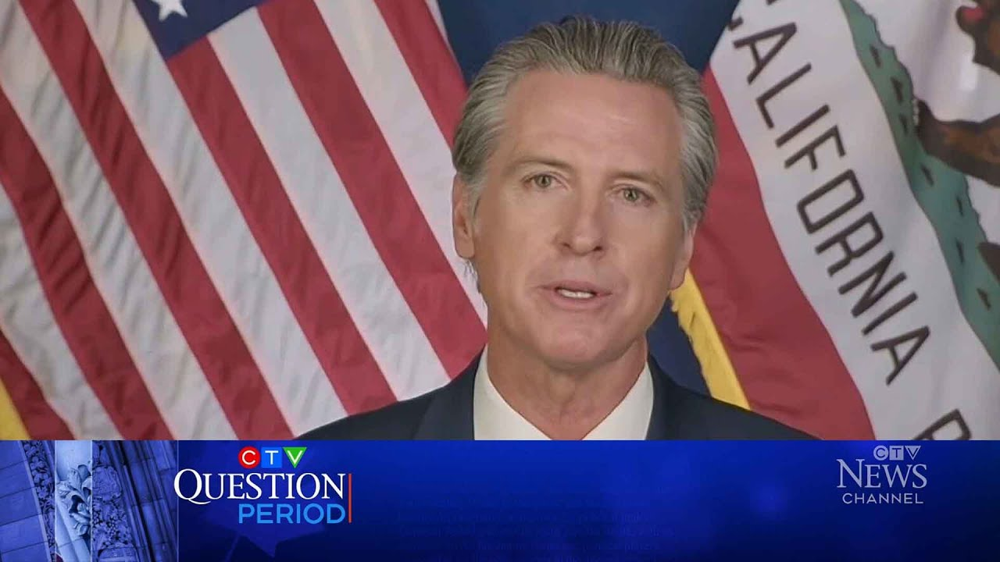

来B站一起耍【Global每日英语简报】
【独家专访加州州长加文·纽瑟姆 | 美国关税问题】
Summary: Governor Gavin Newsom discusses California's lawsuit against Trump's tariffs, their economic impact, and his advice for Canada's prime minister ahead of a meeting with President Trump.
摘要： 加州州长加文·纽瑟姆讨论了加州对特朗普关税政策的诉讼、其经济影响，以及他对加拿大总理与特朗普总统会晤前的建议。

⏱️ Estimated Reading Time: 17 min
Gavin Newsome is the governor of California.
加文·纽瑟姆是加州州长。
Governor, a pleasure to welcome you to our program.
州长，欢迎您来到我们的节目。
Thank you for making the time.
感谢您抽出时间。
Great to be with you.
很高兴与您交谈。
You've become the first state to actually sue uh Trump over these tariffs.
你们是第一个因这些关税政策起诉特朗普的州。
What's the basis of your case?
你们的诉讼依据是什么？
Well, he doesn't have the legal authority to unilaterally impose these tariffs.
他没有单方面征收关税的法律权力。
He used a law 1977 law uh that Congress afforded the president certain rights, but one of them was not to impose unilaterally tariffs.
他援引了1977年的一项法律，国会确实赋予了总统某些权利，但其中不包括单方面征收关税。
It's under the Emergency Economic Powers Act.
这属于《紧急经济权力法》的范畴。
We were the first state uh to initiate that lawsuit.
我们是第一个提起这项诉讼的州。
12 other states have followed suit and interestingly from the conservative perspective inside the Koch brothers are well known here in the United States of America uh champions of conservative causes also have filed a similar lawsuit on the same grounds.
其他12个州也跟进起诉，有趣的是，从保守派的角度来看，科赫兄弟在美国以支持保守事业闻名，他们也基于同样的理由提起了类似诉讼。
Uh if this does end up you know being something that Congress has to tackle, how confident are you that they would back your position which is against the tariffs?
如果最终需要国会来解决这个问题，您有多大信心他们会支持您反对关税的立场？
And I ask because what we have noted here in Canada is there have been governors like yourself who are outspoken, but not a lot of the allies, traditional allies in Congress that we were used to seeing defend free trade are saying a lot this time around.
我这么问是因为我们在加拿大注意到，像您这样直言不讳的州长不少，但国会中那些传统上捍卫自由贸易的盟友这次却很少发声。
No, I mean, we've we have one branch of government.
不，我的意思是，我们现在只有一个政府分支在运作。
It's the rule of of of Trump right now.
现在完全是特朗普的规则。
It's almost the law feels like the law of the jungle in so many respects.
在很多方面，这几乎像是丛林法则。
a sort of apex predator uh deciding day in on a whim day in day out uh a decision on this or that a side deal here a side deal there a phone call uh a foreign leader reaching out I mean it's no way to uh govern a small business let alone uh the largest nation in the world and so the economic consequences the uncertainty uh the chill uh across the spectrum is profound and it's profound because as you suggest this notion of three branches of government co-equal branches of government uh popular sovereignty, the rule of law has been challenged and Congress is completely silent and completely complicit.
就像一个顶级掠食者，每天随心所欲地做决定，今天这样明天那样，这边一个私下协议那边一个私下协议，一通电话，一个外国领导人联系——这根本不是管理一个小企业的方式，更不用说世界上最大的国家了。因此，经济后果、不确定性、各领域的寒蝉效应都非常深远。之所以深远，正如您所说，三权分立、政府平等分支、人民主权、法治这些概念都受到了挑战，而国会完全沉默、完全共谋。
Uh, and that's something that needs to be called out and highlighted.
这需要被指出和强调。
Absolutely.
确实如此。
As well, you mentioned the economic impact and and I wanted to drill down into what it looks like in California.
此外，您提到了经济影响，我想深入了解加州的具体情况。
Here in Canada this week, for example, we're seeing uh layoffs and slowdowns at auto manufacturers.
例如，本周在加拿大，我们看到汽车制造商裁员和减产。
But largely, it's the spectre, right?
但主要是阴影，对吧？
The idea, the uncertainty, we're waiting to see what the full impact will be.
这种想法、不确定性，我们在等待看全面影响会是什么。
tangibly what impact has there been in California and what do you anticipate the the full potential of the economic impact could be?
具体来说，加州已经受到了什么影响？您预计经济影响的全部潜力会是什么？
Well, let's be specific.
让我们具体来说。
I mean, California moves 40% of all the goods in the United States of America come through our ports of entry here in the state, particularly in Southern California, Long Beach, and LA.
加州处理美国40%的货物，它们都通过我们州的入境口岸，尤其是南加州的长滩和洛杉矶。
Uh we just announced yesterday that cargo volume is down 35% already, not 3.5%, 35%.
我们昨天刚刚宣布，货运量已经下降了35%，不是3.5%，是35%。
We've seen tourism numbers drop two months in a row, including significantly uh from Canada, down 16%.
我们看到旅游人数连续两个月下降，其中来自加拿大的游客显著减少了16%。
And by the way, 1.8 million Canadians visit my state every single year.
顺便说一下，每年有180万加拿大人访问我们州。
And it's already had a profound and outsized consequence.
这已经产生了深远且不成比例的后果。
It's understandable from the perspective of how the president United States has been treating the people of Canada.
从美国总统对待加拿大人民的方式来看，这是可以理解的。
Uh but it's important to underscore not just the uncertainty and the chill as it relates to investment, but the impacts that we're already feeling.
但重要的是不仅要强调与投资相关的不确定性和寒蝉效应，还要强调我们已经感受到的影响。
Again, I'm the largest state in the United States of America, the size of 21 state populations combined, the fourth largest GP GDP in the world, the largest manufacturing state and agricultural state, and one of the largest export states in the world.
再次强调，我是美国最大的州，人口相当于21个州的总和，GDP世界第四，是美国最大的制造业和农业州，也是世界上最大的出口州之一。
Uh the impacts here are outsized and profound and consequential.
这里的影响是巨大、深远且具有重大后果的。
Thus, the lawsuit against the Trump administration.
因此，我们提起了对特朗普政府的诉讼。
I know on the one tact you've got the lawsuit.
我知道你们一方面提起了诉讼。
Have there been and I know around the fires and things like this there were.
另一方面，我知道在火灾等问题上你们有过交流。
Have there been any conversations between yourself and the president about the impact of those tariffs and your views on them?
您和总统之间是否就这些关税的影响以及您的看法进行过任何对话？
Well, we we've we've had a lot of conversations.
我们有过很多对话。
I spent 90 minutes in the Oval Office.
我在椭圆形办公室待了90分钟。
I think I was the first Democratic governor to to visit with the president.
我想我是第一个与总统会面的民主党州长。
I have an interesting relationship with them.
我与他的关系很有趣。
Uh we we get along very well uh to uh in private.
私下里我们相处得很好。
We get along uh on the phone.
我们在电话中也相处得很好。
It's just it's the back and forth and the noise uh in the public uh uh sphere that's a little bit more challenging.
只是在公开场合的来回交锋和噪音有点更具挑战性。
Look, I represent the most untrump state in America.
你看，我代表的是美国最不特朗普的州。
Uh that said, uh I I don't wake up every single morning looking to find a crowbar to put in the spokes of the wheel, the Trump administration.
尽管如此，我并不是每天早上醒来都想着找根撬棍插进特朗普政府的车轮里。
It's an open hand, not a closed fist.
我是伸出开放的手，而不是握紧拳头。
I want to work with the president.
我想与总统合作。
Uh but it's very challenging right now across the spectrum because the assault uh on free enterprise, the assault on the rule of law, the assault on our allies and our trading partners, relationships, uh the assault on trust, the coin of the realm, trust, relationships that matter.
但目前各方面都非常具有挑战性，因为对自由企业的攻击、对法治的攻击、对盟友和贸易伙伴关系的攻击、对信任的攻击——信任是王国的货币，是重要的关系。
And so we are asserting ourselves and and and I know your prime minister will be meeting uh with President Trump and he'll insert assert himself as well.
因此，我们正在坚持自己的立场，我知道你们的总理将与特朗普总统会面，他也会坚持自己的立场。
But on the basis of the relationship that many people have with Donald Trump, I imagine that will be a very positive meeting uh and I hope the prime minister uh takes that approach and engages him uh and and is very honest and forthright in terms of expectation setting and I think it will actually be wellreceived.
但基于许多人与唐纳德·特朗普的关系，我想这会是一次非常积极的会面，我希望总理采取这种方式与他接触，在设定期望时非常诚实和直率，我认为这会得到很好的接受。
Do you have a sense of whether or not the econ you mentioned the economic impact in California, but it's been widespread, right?
您是否感觉到经济影响不仅限于加州，而是广泛的，对吧？
There's a massive slowdown happening in the US economy.
美国经济正在大幅放缓。
The markets have been incredibly volatile and lost significant value since the start of the year.
自年初以来，市场异常波动，损失了巨大价值。
Do you have a sense of whether or not any of that is tracking?
您是否感觉到这些情况正在被追踪？
I know we see like on the margins, you know, we're climbing down on this tariff or that tariff or pausing this, but do you think it will ultimately change the ethos that Trump brings to the table around tariffs, the utility he sees in them?
我知道我们在边缘看到一些动作，比如降低这项或那项关税，或者暂停某项，但您认为这最终会改变特朗普在关税问题上的态度吗？他如何看待关税的效用？
Well, look, you know, we've been challenged with the Trump administration on a full-on assault uh on on on the legacy of Ronald Reagan and Richard Nixon, two well-known Republicans, uh as it relates to environmental laws and environmental stewardship, of which California's been a champion.
你看，我们一直在与特朗普政府对抗，他们全面攻击罗纳德·里根和理查德·尼克松这两位著名共和党人的遗产，尤其是在环境法律和环境管理方面，而加州一直是这方面的领导者。
I say this to make a point.
我这么说是有目的的。
He doesn't believe in mother nature, but he believes in markets, Donald Trump.
唐纳德·特朗普不相信大自然，但他相信市场。
And as a consequence, the markets bat last.
因此，市场是最后的裁决者。
They bat a thousand.
它们表现出色。
And they're speaking loudly.
它们的声音很大。
And as a consequence, he's reacted to that not to the utterances of governors, not even to members of his own party or advisers, but the markets.
因此，他对此的反应不是针对州长们的言论，甚至不是针对他自己党派成员或顾问的意见，而是针对市场。
And so we saw a.3% contraction in United States GDP after 2.4% prior quarter uh expansion.
因此，我们看到美国GDP在上季度增长2.4%后收缩了0.3%。
We were the tenpole of the world's economy.
我们曾经是世界经济的标杆。
We're the envy of the world before Trump came in.
在特朗普上台前，我们是世界的羡慕对象。
The economy was booming.
经济蓬勃发展。
Inflation was cooling.
通胀正在降温。
Now all of that has changed.
现在这一切都改变了。
As a consequence, he's beginning to change.
因此，他开始改变。
uh and that's now been reflected not just in the rhetoric uh but also I think in the reality of the of his engagement and that's why again I feel a little bit more confident and optimistic particularly as it relates to uh the new prime minister engaging uh with President Trump this week.
这不仅反映在他的言辞中，我认为也反映在他实际的行动中，这就是为什么我对新总理本周与特朗普总统的会晤感到更有信心和乐观。
I think it's actually a good week to engage uh and I feel like things are about to cool here.
我认为这实际上是一个很好的会晤时机，我感觉事情即将降温。
Uh and of course we're saying this with vigilance and with authority, formal authority is the largest state in our union.
当然，我们说这话时保持警惕和权威，作为联邦中最大的州，我们有正式的权威。
Uh but with hope and expectation uh that we can come out the other side with some more rational policym.
但我们怀着希望和期待，希望我们能在另一边制定出更理性的政策。
So let me ask you a bit of an odd question as you mentioned that 90-minute period that that you did spend with the with the president so early in on his mandate.
让我问您一个有点奇怪的问题，您提到在特朗普任期早期与他共度的那90分钟。
Uh, what is your best advice to our prime minister as he gets set to sit down for the first time in in person with the president?
您对我们总理即将首次与总统面对面会晤的最佳建议是什么？
They've had two calls, both of which are have been described as constructive, which is not the case with our last prime minister.
他们已经有过两次通话，都被描述为建设性的，这与我们上一任总理的情况不同。
What's your best advice to this one about how to engage?
您对他如何接触的最佳建议是什么？
Well, look, I I I hate giving advice.
我不喜欢给建议。
Nothing worse than politicians giving other politicians advice.
没有什么比政客给其他政客建议更糟糕的了。
So, with humility and grace, Yeah.
所以，带着谦逊和优雅。
Let me let me just say this sincerely.
让我真诚地说。
I, you know, and this may be strange advice.
这可能是个奇怪的建议。
I hope it's a one-on-one meeting.
我希望这是一次一对一的会晤。
I hope with respect.
我希望是尊重的。
Look, you saw what happened with Zalinski.
你看泽连斯基发生了什么。
Um, and that was a very different meeting.
那是一次非常不同的会晤。
The the meetings Donald Trump tends to have with principles tend to go quite well.
唐纳德·特朗普与领导人的会晤往往进行得相当顺利。
I mean, I think objectively, if you look back over years, Trump 1.0 and the relationships he's had with foreign leaders, uh, even in this term, uh, those one-on-one meetings have tended to go well.
我认为客观地说，回顾过去几年，特朗普1.0版本与外国领导人的关系，甚至在这个任期内，那些一对一的会晤往往进行得很好。
What was different about that Zillinsky meeting was all the other folks that were in the room, the vice president, etc.
泽连斯基会晤的不同之处在于房间里还有其他人，比如副总统等。
So, I hope this is a one-on-one meeting because I think that will favor uh, uh, the kind of relationship that our two countries deserve.
因此，我希望这是一次一对一的会晤，因为我认为这将有利于我们两国应得的那种关系。
Uh and and I also appreciate uh your prime minister's assertiveness.
我也欣赏你们总理的坚定态度。
Come in with the points of pride principle uh with the authority the moral and formal authority he has uh as prime minister of a remarkable nation Canada.
带着自豪的原则，带着他作为加拿大这个卓越国家的总理所拥有的道德和正式权威。
Um and assert yourself uh at the same time uh it's it is about developing a relationship and with Donald Trump uh at the end of the day it is all about relationships.
同时坚持自己的立场，但最终是与唐纳德·特朗普建立关系，归根结底一切都是关于关系。
So I look I have a lot more confidence than perhaps some pundits about what will happen after Tuesday.
因此，我对周二之后会发生什么比一些专家更有信心。
I'm very hopeful.
我非常希望。
Uh but again, one-on-one meeting.
但再次强调，一对一的会晤。
Uh don't mix it up with all these other characters that will end up in that Oval Office.
不要与那些最终会出现在椭圆形办公室的其他人物混在一起。
That's the only risk.
这是唯一的风险。
Just final question for you, point blank.
最后一个直截了当的问题。
Do you think that it is possible for these tariffs to be removed?
您认为这些关税有可能被取消吗？
Like, do you think that might happen?
您认为这会发生吗？
Well, it has to happen.
必须发生。
I mean, look, it's already happening.
已经在发生了。
You're you're seeing, you know, these side, as I said, side deals.
你看到这些私下协议。
If Tim Cook from Apple makes a phone call, all of a sudden, smartphones are eliminated from some of those China tariffs.
如果苹果的蒂姆·库克打个电话，突然智能手机就从某些中国关税中排除了。
We're already seeing at least the assertion from members of the administration they already have deals and they have this goal of of 90 trade deals in 90 days.
我们已经看到政府成员声称他们已经达成协议，他们有90天内达成90项贸易协议的目标。
We'll see.
我们拭目以待。
Uh so there's no doubt about it.
毫无疑问。
They're in they're in that transaction business right now.
他们现在正处于交易模式。
Uh which suggests just that that there's uh there's I think some the end in sight here, some hopefulness on the horizon, but there's also stubbornness.
这表明终点在望，希望在前方，但也有固执。
Uh and we'll have to work through that.
我们必须克服这一点。
None of us are naive.
我们都不天真。